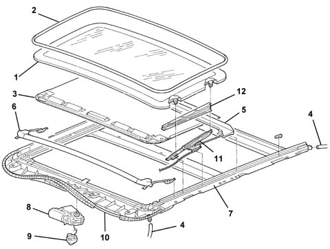
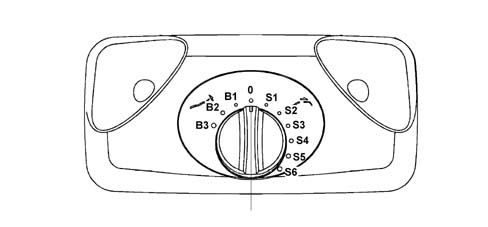
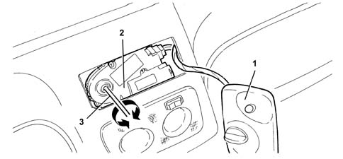
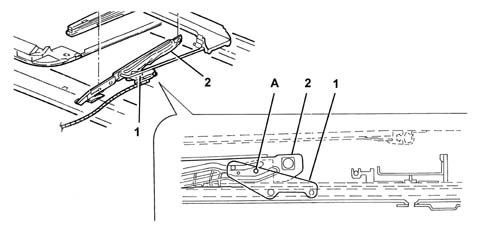

Introduction - SUN ROOF AND HOOD
- Path
- Descriptions > 70 FITTINGS > 7030 SUN ROOF AND HOOD > Introduction - SUN ROOF AND HOOD
- Kind
- system description
- Applies to
- all engines; all production periods
- Interactive page
- https://sloeber94.github.io/elrnDB-a147/en/#/3026122
Applies to: all engines; all production periods
SUNROOF
All vehicles can be fitted as an option with an electrically-operated sun-roof which can , on some versions, also be operated by a remote control. The sun-roof is adjustable by means of a selector to nine positions in addition to the closed position. This allows the air flow around the passenger compartment to be optimised. To ensure safety during movement, the sun-roof is fitted with an anticrush safety device that cuts out movement in the presence of obstacles.
SPECIFICATIONS:
The sun-roof unit is made with a sliding part made out of tinted glass. This is operated electrically by means of an electric motor and can be adjusted to nine positions over and above closed position by means of a selector (three tilted positions to form a spoiler and six concealed sliding positions).
A sealing strip around the edge of the sun-roof is in contact with the roof profile.
The sun-roof is also fitted with a rigid, hand-operated blind that shields the light.
The selector is located on a courtesy light between two ultrasound sensors and controls the electric operating motor by means of a control unit. The sun-roof is moved by two flexible racks to which are anchored the guides that pull the expanding pullies that support the sun-roof.
To limit possible damage to passengers or objects caused by the roof when in movement, an anticrush function is active during roof closure, when the panel is sliding and also during tilt manoeuvres.
Drainage channels on the front and rear of the frame drain off water that could filter from the seals through pipes with antireflux valves if the roof is not completely closed or misaligned.
COMPOSITION
The figure shows the sun-roof components

1 - Tinted glass 2 - Seal 3 - Sun blind 4 - Drainage pipe 5 - Drainage channel 6 - Deflector 7 - Mechanical guide 8 - Motor 9 - Potentiometer 10 - Flexible racks 11 - Extending support mechanism 12 - Mechanism guard
The system consists of:
- an electric displacement motor with Hall-effect position and speed sensors
- a sliding frame with a flexible rack pulling system;
- an electronic control unit built into the electric motor assembly;
- a selector with inhibition control, used to move the sun-roof to different positions.
OPERATION
The sun-roof is moved along the slide guides on the frame by means of an electric motor. This may be controlled manually by a selector or remotely (on certain versions) by means of a command sent by the Body Computer (DF5505) to the control unit.
The motor moves flexible pulling racks housed in seats on the frame. These are anchored to extending mechanisms that suport the sun-roof, which is moved to the required point or position.
The sun-roof is equipped with an underlying blind that can be slid along by hand by means of a handle. This is designed to keep out sunlight.
When the sun-roof is fully opened and concealed, the blind is pulled completely inside the roof panel. When the sun-roof is closed, the blind emerges partially so that it can be more easily grasped.
The sun-roof may be moved manually by means of the selector under the following conditions:
- with key on;
- the roof can be moved remotely, i.e. when the control unit receives control signals from the Body Computer (DF5505), under the following conditions:
- opening/closure by means of the remote control, with a central window locking system fitted and after locking the doors, by depressing the remote control button for longer than 10 seconds, i.e. the time required for a full travel - (function active with key-off);
In remote control mode, the sun-roof opens or closes automatically whatever the selector position.
During movement, slide/tilt operations (including operations controlled remotely), the anticrush protection is always active
ANTIPINCH FUNCTION
To limit possible damage to passengers or objects by the moving roof, an anticrush function is active during closure, when the panel is sliding and when the roof is tilted.
If effort in excess of a given threshold is detected, the control unit interprets this as an obstacle and stops movement immediately before moving the roof back by about 10 cm if it is sliding - or in the fully open position if it is tilting.
The anticrush protection can be cut out by setting the selector to the inhibition position as follows:
- select the required position;
- press the selector down vertically and hold down during movement until the selected position is achieved.
Selector
View of manual control selector

0 - Roof closed position B1- Minimum tilt position B3 - Maximum tilt position S1 - Minimum slide position S6 - Maximum slide position
The manual control selector is adjustable:
- by turning the knob anticlockwise to three preset tilted spoiler heights from B1 to B3;
- by turning the knob clockwise to six preset concealed sliding positions from S1 to S6;
- to position 0 corresponding to roof closed. This position can be identified because it is stiffer to click into;
- on inhibition position (all selector connections earthed) by pressing the selector down vertically.
Control unit
Sun-roof movement is controlled by an electronic control unit housed in the casing integral with the motor. The unit processes signals from the selector or remote control via the body computer and also controls the anticrush protection function.
The function is controlled by the control unit, which receives position and speed information from Hall effect sensors fitted to the motor. When effort in excess of a certain threshold is detected, corresponding to a higher current uptake, this is interpreted as an obstacle. The control unit then stops the roof immediately and moves it back in the opposite direction by about 10 cm.
The control unit also receives a vehicle speed signal because the vacuum created at certain speeds could change the effort required to close the roof and under certain conditions this could be interpreted as an impediment. The control unit therefore uses this signal to ensure movement is not halted inadvertantly.
Emergency manoeuvre
View of activation points for emergency movement.

1 - Volumetric sensor mount 2 - Electric control motor 3 - Operating key
If the electric movement device fails to operate, the sun-roof may be moved manually as described below:
- prise up the volumetric sensor mount;
- fit the 4 mm socket wrench provided into the seat on the motor;
- turn the wrench clockwise to open the roof or anticlockwise to close it.
Alignment
Procedure for alignment on the car
If repairs require both sun-roof and motor to be removed at the same time and then refitted, if you are not sure that the sliding guide position has been maintained, restore alignment between the two guides before the parts are refitted because sun-roof alignment is no longer guaranteed and water and air may enter.
To restore guide alignment, proceed as follows with the motor disconnected:
- move the extending support guides by hand until they are fully opened on both sides and ensure that sliding has completed;
- move the support levers into (roof closed) position;
- align the through holes on the pulling guides with the blind holes on the support levers by means of two pins (one on each side) 3mm in diameter as shown in the following figure;
View of guide alignment procedure.

1 - Support lever 2 - Pulling guide A - Reference pin introduction point
Proceed as follows to align the guides:
- hold the pins in position and refit the motor
- remove the alignment pins;
- reconnect the motor to the electrical system and the selector to the control unit;
- refit the sun-roof to the extending mounts and adjust the position to ensure correct alignment and a perfect seal.
- carry out the control unit memory resetting procedure as described i the relevant paragraph;
- renew the guide shield trims.
Procedure for alignment at the bench
With the sun-roof assembly on the bench, following procedures that involve removal of the motor and moving or sliding parts, proceed as follows to align the sun-roof guides and position the mobile parts correctly:
- fit the removed parts except for the motor;
- move the extending support guides by hand until they are fully opened on both sides and ensure that sliding has completed;
- move the support levers into (roof closed) position;
- align the through holes on the pulling guides with the blind holes on the support levers by means of two pins (one on each side) of exact diameter as shown in the previous figure;
- hold the pins in position and refit the motor. Then remove the alignment pins;
- refit the sun-roof to the extending mounts and adjust the position to ensure correct alignment and a perfect seal.
- refit the sun-roof to the vehicle and reset the control unit memory as described in the relevant paragraph.